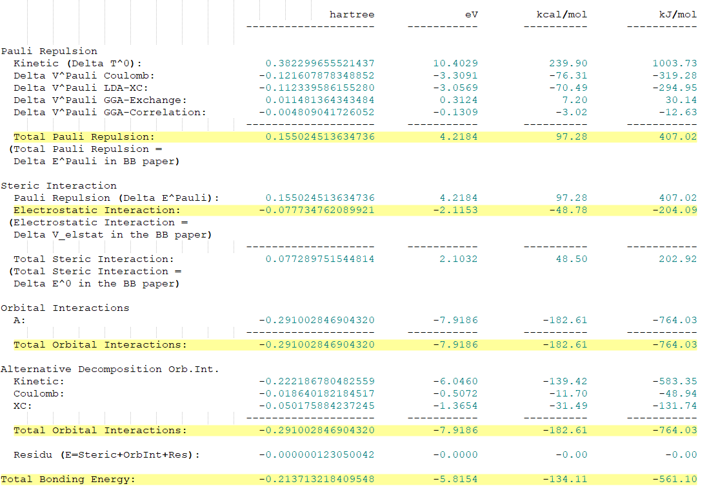

输入文件
碎片
- 根据体系，指定电荷和自选多重度，确定碎片是闭壳层还是开壳层
1
2charge 0 -3
unrestricted - 可以根据整体分子的对称性指定碎片的对称性
- 过渡金属配合物设置对称性的注意事项：
- 金属原子设置为原点，如果是金属团簇，则原点设置在金属团簇的中心，高对称轴设置为z轴（例如金属原子参与成键的是d、f轨道，但是分子却具有C3、C5、C7……这样的奇数的转动对称，这样设置是必须的)。设置方法是在图形界面中Edit→Align→（设置xy平面或者设置z轴），再通过Edit→Set Origin设置原点，最后可以通过View→Axes观看坐标轴来确认。
- 近似对称结构，金属碎片需要设置与对称结构相同的点群，例如Oh群八羰基配合物，其中一个羰基被替换为其他结构，金属原子仍然需要设置为Oh群
- NOCV不支持点群，EDA支持，因此虽然NOCV分析默认会做EDA分析，但是建议分别都做一个，便于分析不同对称性的碎片轨道的共价作用
- 过渡金属配合物设置对称性的注意事项：
- 有时候默认计算得到的结果可能导致分数占据、占据的轨道不正确、碎片的自旋不匹配等，尤其是金属原子作为一个碎片，需要注意其电子占据方式、自旋多重度，此时需要根据碎片的闭壳层/开壳层、对称性和占据，通过
IRREPOCCUPATIONS来指定其占据方式，也可以在整体分子中通过FRAGOCCUPATIONS指定。
eg. 开壳层的β电子指定：1
2
3
4IRREPOCCUPATIONS
sigma 1 0 0//1 1 0
pi 0 0 0//2 0 0
end
整体分子
- 碎片数不局限，在分子坐标后面跟上
f=name，然后在Fragments中指定碎片的t21文件，比如：1
2
3
4
5
6
7
8
9
10ATOMS
1 H 0.000000000010 -0.000000000016 1.080824461000 f=f1
2 C -0.000000000012 0.000000000015 0.036537953000 f=f2
3 N 0.000000000002 0.000000000002 -1.117362414000 f=f2
END
Fragments
f1 H.t21
f2 CN.t21
end - 整体分子的计算不能使用对称性，需要用
symmetry nosym - 需要使用
ETSNOCV和PRINT {ETSLOWDIN | ETSLOWDIN-Unrestricted}关键词：ETSNOCV指定打印NOCV相关信息的阈值：RHOKMIN各个SFO对每个变形密度贡献进行总体分析的阈值EKMIN轨道相互作用能量贡献的阈值ENOCVNOCV特征值的阈值
当三个关键词都省略时，只分析NOCV特征值绝对值≥0.05的
PRINT {ETSLOWDIN | ETSLOWDIN-Unrestricted}中：- 如果计算的是闭壳层碎片，使用
PRINT ETSLOWDIN，输出的是总形变密度 - 如果计算的是开壳层碎片，使用
PRINT ETSLOWDIN-Unrestricted，输出的是α和β两组NOCV1
2
3
4
5
6ETSNOCV
{RHOKMIN rhokmin}
{EKMIN ekmin}
{ENOCV enocv}
End
PRINT {ETSLOWDIN | ETSLOWDIN-Unrestricted}
- 如果计算的是闭壳层碎片，使用
- 还可以根据需要使用
PRINT NOCVHirshfeld来区分片段间还是片段内的NOCV，输出文件会打印每个NOCV的$\int{\Delta \rho} = -\Delta Q$值到ETS-NOCV末尾的“Hirshfeld partitioning” ：- 片段间NOCV具有非零积分Hirshfeld$\Delta Q$值，并且对应于片段之间的电荷转移
- 片段内NOCV具有小的$\Delta Q$值，并且对应于片段的极化。
例子
HCN拆分成H+和CN-闭壳层分析
H+
1 | …… |
CN-
1 | …… |
HCN
1 | …… |
输出结果中，为α和β两组NOCV
HCN拆分成H和CN开壳层分析
H
1 | …… |
CN
1 | …… |
HCN
1 | …… |
EDA分解结果
- 总的能量分为以下几项：
- 泡利排斥$ΔE_{Pauli}$：两个片段占据轨道之间的排斥作用，会导致能量升高（＞0），电子和电子之间的泡利排斥大概在1玻尔的范围内。
- 静电吸引$ΔE_{elstat}$：分子中片段局部位置不是电中心，会存在简单的的 静电相互作用能，会让能量降低（＜0）
- 轨道作用$ΔE_{orb}$：本质是共价作用（电子的共享）（＜0）
- 一个片段占据轨道另一个片段空轨道之间的“电子转移”，能量降低
- 一个片段自身占据轨道与空轨道的电子转移，能量降低
- $ΔE_{prep}$：准备能，片段从它的自由状态（孤立存在的时候，能量最低点），能量升高，变形为在分子中的形状，这个过程所增加的能量，该项非负
- 色散作用$ΔE_{disp}$：在使用色散修正泛函的话才存在
- ADF的结果中包含的依次是
 - 键能有两种：
- 一种直接是$ΔE_{int}$
- 一种是在$ΔE{int}$的基础上加上准备能$ΔE{prep}$，计算方法是将片段，分别进行能量最小化，之后的能量降低量之和，即准备能（＞0）
NOCV结果
轨道相互作用能
轨道相互作用能的贡献根据闭壳层（只有一组）和开壳层（分为α和β两组）的结果列出：1
2
3
4
5
6
7
8
9
10
11
12
13
14
15
16
17
18
19
20================
Alpha resolution
================
1. Eigenvalue pairs from diagonalization of DeltaP expressed in Lowdin - alpha:
1 -0.56641 31 0.56641
2 -0.12938 30 0.12938
3 -0.06636 29 0.06636
4 -0.06636 28 0.06636
2. Orbital Interaction Energy Contributions from each NOCV pair - alpha(in a.u.)
1 -0.17666
2 -0.01565
3 -0.00352
4 -0.00352
3. Orbital Interaction Energy Contributions from each NOCV pair - alpha(in kcal/mol)
1-110.85632
2 -9.81984
3 -2.21067
4 -2.21067
Total sum [alpha]: -125.507539810232
- 本征值，按本征值的绝对值的大小列出，也即贡献的大小
- 与本征值对应的轨道的能量，单位是Hatree
- 与本征值对应的轨道的能量，单位是kcal/mol
电子转移
- 每个本征值的NOCV，电子在片段轨道之间，是如何在SFO碎片轨道中转移的：
- 比如本征值为±0.56641的NOCV中，1、7号SFO分别失去0.61238、0.04257个电子，10、2号SFO得到0.62190、0.01341个电子
- SFO轨道可以在out文件中的
S F O s模块查看，也可以通过图形界面查看 （通过SCM→View→Add Isosurface:with phase→Select Field→SFOs选择对应的SFO编号，查看其空间分布形状）1
2
3
4
5
6
7
8
9
10
11
12
13
14=============================================================
SFO decomposition of alpha Delta rho k (major contributions):
=============================================================
Threshold for a NOCVs energy (in kcal/mol) is 2.00000000000000
Threshold for an individual SFO contribution is 1.000000000000000E-002
1 NOCV eigenvalues: -0.56641 0.56641
Corresponding Delta E k:-110.85632 (kcal/mol)
10 SFO contribution: 0.62190
1 SFO contribution: -0.61238
7 SFO contribution: -0.04257
2 SFO contribution: 0.01341
Sum from all SFOs: -0.79216E-02
- 通过SCM→View→Add→Isosurface:with phase→Select Field→NOCV Orbitals选择±本征值查看成键前后分子轨道的图像：
- 选择本征值为负的，表示轨道相互作用前分子轨道的图像
- 选择本征值为正的，表示轨道相互作用后分子轨道的图像
- 通过SCM→View→Add→Isosurface:with phase→Select Field→NOCV def Density选对应的本征值观看轨道图像显示成键时的电子转移：
- 红色区域，代表这个区域失去了电子
- 蓝色区域，代表这个区域得到了电子
由于电子得失比较少，因此等值面的大小需要改到0.005左右。
- NOCV def Densities，是“正本征值NOCV orbital的模方” - “负本征值NOCV orbital的模方”：
- 负本征值NOCV Orbital实际上一部分是占据电子的，另一部分是不占据电子的
- 正本征值NOCV Orbital则是形成化学键，整个轨道上都占了电子的
因此NOCV def Densities表示电子的流向，负值表示失去电子，正值表示得到电子。只有NOCV def Density能够可靠地、直观地、明确无误地表征成键作用，文献中一般也只讨论NOCV def Density。
- 开壳层体系中NOCV def Density会分成α和β两组，如果需要看整体的，则需要Fields→Calculated，在Select Fields中选择配对的α和β轨道，中间的符号换成+，然后在SCM→View→Add→Isosurface:with phase→Select Field选择C-1。